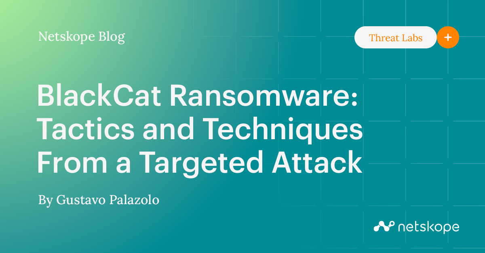

2023-10-27
VirusTotal
VirusTotal
https://www.virustotal.com/gui/file/2948e822ce3a670c6c0a7441886966bfacf5543dec4348a616f5774b47a23d4d/behavior
A Deep Dive Into ALPHV/BlackCat Ransomware - SecurityScorecard
ALPHV/BlackCat is the first widely known ransomware written in Rust. The malware must run with an access token consisting of a 32-byte value (--access-token parameter), and other parameters can be specified. Learn about its particular behaviors.
https://securityscorecard.com/research/deep-dive-into-alphv-blackcat-ransomware/
BlackCat Ransomware: Tactics and Techniques From a Targeted Attack
Summary BlackCat (a.k.a. ALPHV and Noberus) is a Ransomware-as-a-Service (RaaS) group that emerged in November 2021, making headlines for being a

{kind=link}
{kind=link}
import binascii
# Function to perform XOR operation on two bytes-like objects
def xor_bytes(b1, b2):
return bytes(x ^ y for x, y in zip(b1, b2))
# Read the encrypted and decrypted files
with open('Bliss_Windows_XP.png.encry', 'rb') as encrypted_file, \
open('bliss.png', 'rb') as decrypted_file:
encrypted_data = encrypted_file.read()
decrypted_data = decrypted_file.read()
# Assuming decrypted_data is the known plaintext version of the file
# XOR the encrypted data with the known plaintext to obtain the key
key = xor_bytes(encrypted_data, decrypted_data)
# Specify the number of bytes you want in your shorter key
short_key_length = 16 # Change this to your desired length
# Get the shorter key by slicing the original key
short_key = key[:short_key_length]
# Convert the short key to hexadecimal
short_key_hex = short_key.hex()
# Convert the hexadecimal short key back to ASCII
short_key_ascii = binascii.unhexlify(short_key_hex)
# Now you can use the ASCII short key for decryption
# Print the ASCII short key
print(f"Decryption Key (ASCII): {short_key_ascii.decode('utf-8')}"){kind=link}
{kind=link}